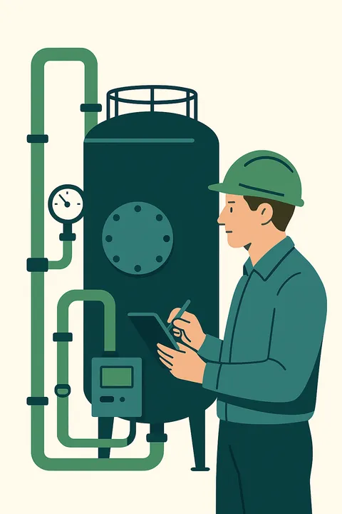

Un mécanisme basé sur l’engagement de performance
Le fonctionnement d’un CPE repose sur un principe fondamental : le prestataire s’engage sur un résultat mesurable, généralement une économie d’énergie exprimée en kWh ou en pourcentage par rapport à une situation de référence. Cet engagement est encadré contractuellement, avec des pénalités ou bonus selon l’atteinte (ou non) des objectifs.
Cela implique une approche globale, intégrée et pilotée dans le temps, depuis l’audit initial jusqu’au suivi des consommations pendant plusieurs années.
Les grandes étapes d’un projet CPE
Voici le déroulement type d’un CPE, souvent structuré en 6 phases majeures :
-
Phase de cadrage et de faisabilité
- recensement du patrimoine concerné
- relevé des consommations historiques
- diagnostic énergétique sommaire ou approfondi
- estimation du potentiel d’économies
- analyse juridique et financière (choix du type de contrat)
- validation de l’intérêt économique du recours au CPE
🔎 Objectif : établir la pertinence du CPE pour votre site
 -
Définition de la ligne de base énergétique
La ligne de base est le niveau de consommation de référence, déterminé à partir :
- des consommations historiques (3 années typiques)
- de la météo (DJU, T°C, etc.)
- de l’usage réel du bâtiment (occupation, horaires)
Cette base servira à mesurer les économies réalisées, en neutralisant les aléas (climatiques, usage, etc.).
⚠️ Point critique : une ligne de base mal définie fausse tout le contrat.
-
Conception des solutions techniques
À cette étape, le prestataire ou l’AMO propose un bouquet de solutions techniques :
- régulation du chauffage
- relamping LED
- ventilation double flux ou pilotée
- calorifugeage, GTB, etc.
💡 Chaque solution est dimensionnée pour optimiser le gain énergétique et le retour sur investissement, tout en maintenant le confort d’usage.
-
Contractualisation
Le contrat précise :
- le niveau de performance attendu
- la durée d’engagement (souvent 5 à 12 ans)
- les modalités de calcul des économies
- les règles de mesure & vérification (M&V), généralement selon l’IPMVP
- les mécanismes de pénalité et/ou de prime
- les responsabilités du client (usages, maintenance, etc.)
📝 Il peut s’agir d’un marché public (MPA, MPGP, CREM) ou d’un contrat privé sur-mesure.
-
Réalisation des actions
Selon le périmètre du CPE :
- Travaux : remplacement d’équipements, isolation, automatisation…
- Exploitation : maintenance des installations, optimisation continue
- Sensibilisation : formation des usagers ou du personnel
🚧 Les travaux sont souvent autofinancés par les économies générées, parfois via un tiers-financement.
-
Suivi, mesure et garantie
Une fois les actions mises en œuvre :
- des comptages énergétiques précis sont installés
- les consommations sont suivies mensuellement
- un rapport de performance énergétique est produit chaque année
- un bilan est comparé à la ligne de base
💶 Si les économies réelles sont inférieures aux engagements, le prestataire indemnise partiellement ou intégralement le différentiel.
Le protocole IPMVP
Le protocole IPMVP (International Performance Measurement and Verification Protocol) est le référentiel le plus utilisé pour encadrer les mesures dans les CPE. Il prévoit plusieurs options selon la complexité du projet (Option A, B, C, D) et garantit :
- une traçabilité des données
- des résultats objectivables
- une transparence contractuelle
Répartition des rôles dans un CPE

Maître d’ouvrage
Définit les objectifs, valide les étapes, suit les résultats
Prestataire CPE
Conçoit, met en œuvre, garantit les économies

AMO (facultatif)
Aide au pilotage du projet, au choix des solutions, à la rédaction
Tiers-financeur (facultatif)
Prend en charge l’investissement en échange d’un remboursement

Usagers/exploitants
Participent au bon usage et à la durabilité des résultats
Pourquoi ce modèle est-il efficace ?
- ✅ Il aligne les intérêts du prestataire et du client
- ✅ Il transforme un projet de rénovation en investissement mesurable
- ✅ Il fiabilise le pilotage énergétique à long terme
- ✅ Il permet d’intégrer des aides et financements dans le montage
Prêt à passer à l’action ?
Estimez vos économies ou échangez avec un spécialiste.
Exemple réel de fonctionnement d’un CPE
Une commune de 8 000 habitants a rénové ses 6 bâtiments publics avec un CPE :
- 27 % d’économies garanties sur 8 ans
- 310 000 € de travaux financés via les économies d’énergie
- suivi en ligne des consommations via une plateforme GTB
- aucun dépassement budgétaire
- satisfaction élevée des agents et usagers